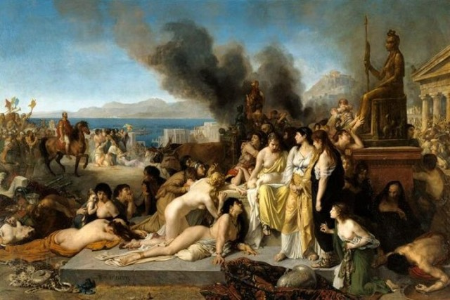
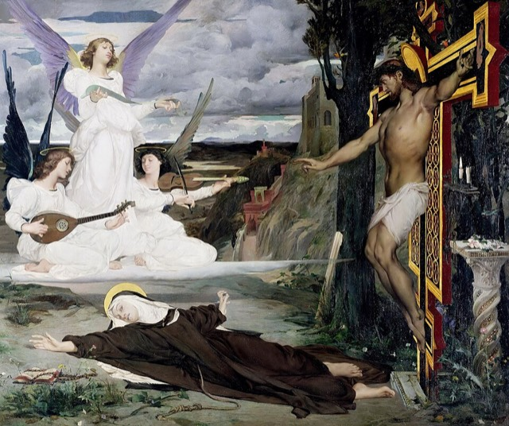
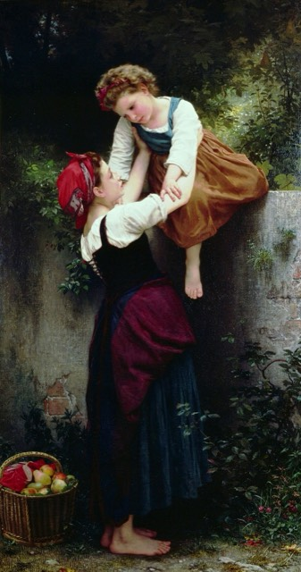
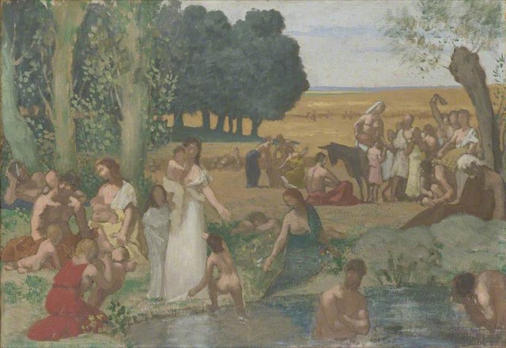
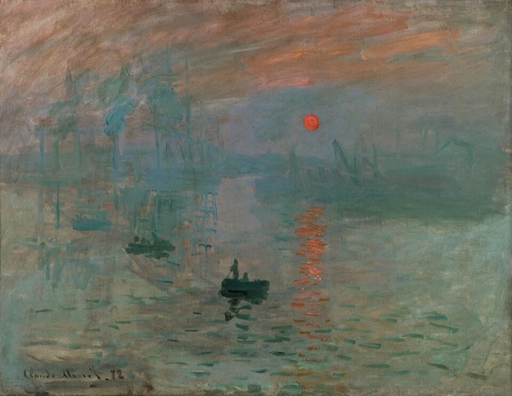

전시장 곳곳의 QR을 스캔하고, 시대의 파편을 수집하세요
프로토타입 — 실제 운영 시 각 미션은 전시장 QR 스캔으로 진입합니다
당신은 오늘의 심사위원입니다.
올해 가장 잘 그린 그림을 골라 주십시오.




심사위원 카드를 다시 확인하고,
다른 작품을 골라보세요.
〈라 비지옹, 14세기의 전설〉 — 뤽-올리비에 메르송
1873년 살롱에서 실제로 1등급 메달을 받은 그림입니다.
당신은 아카데미 심사위원의 안목을 갖추셨군요!
아카데미 살롱은
그 시대 아름다움의 기준을 정했다.
그러나 시대는 이미
그 기준을 넘어 움직이고 있었다.
잠깐, 이 동네 소문 들었어요?
카페 게르부아에 매주 모이는 예술가들이 있는데, 그 모임 이름이 뭐였더라?
혹시 아시면 알려주세요. 모리스 칼럼에 전단지가 붙어 있다고 하던데…
힌트: 이 모임 이름은
카페가 있던 동네 이름에서 따왔습니다.
École des Batignolles.
카페가 있던 바티뇰 지역의 이름을 딴 것으로,
마네를 중심으로 모네·르누아르·드가·바지유가 모였습니다.
이들 대부분이 훗날 '인상주의'라는 이름으로 불리게 됩니다.
화가, 작가, 그리고 뜻을 같이하는 모든 이들께.
매주 목요일과 일요일 저녁, 까페 게르부아의 한 켠에서 바티뇰파 모임이 열립니다. 담배 연기 자욱한 이 작은 탁자 위에서 다음 시대의 예술이 태어나고 있습니다.
관심 있는 자, 누구든 환영합니다. — 바티뇰파
사업가의 책상 위, 세계가 빨라지고 있습니다.
이 방 어딘가에 노르망디(에트르타)행 기차표가 있습니다.
찾아서 촬영해 주세요 — 이 기차표는 3층 생라자르역에서 실제로 사용됩니다.
운영 시: 오브제 촬영 인식 (그림 스캔과 동일 기술) — 데모에서는 그림 2종만 인식 대상
3층 생라자르역 입장 시 역무원에게 이 화면을 제시하세요
두 개의 방이 있습니다. 어두운 실내의 돼지방광 물감 화가의 방, 그리고 야외의 빛이 쏟아지는 튜브물감 화가의 방.
1841년 발명되어 화가를 화실 밖 자연으로 이끈 물건 — 튜브물감을 찾아 촬영하세요.
운영 시: 오브제 촬영 인식 — 데모에서는 그림 2종만 인식 대상
물감을 들고 나갈 수 있게 되자,
화가는 순간의 빛을 현장에서 그릴 수 있게 되었습니다.
같은 도구가 주어져도, 무엇을 보느냐가 그림을 바꿉니다.
1874년, 첫 인상파 전시회.
한 평론가는 어느 그림의 제목을 비꼬아 "인상주의자들"이라는 조롱 섞인 이름을 만들어냈습니다.
전시관에서 그 문제의 그림을 찾아 카메라로 비추세요.
그림이 인식되면 자동으로 정답/오답 판정 · 대상 그림은 candidates.html을 다른 화면에 띄우세요

조롱으로 시작된 이름이 새로운 시대의 이름이 되었습니다.
새로운 시대는 언제나 한 장면에서 시작됩니다.
노르망디행 열차가 곧 출발합니다.
역무원에게 기차표를 제시하세요.
실제 운영: 역무원 복장의 스태프가 화면의 스탬프 버튼을 눌러 인증
모네가 직접 설계하고 가꾼 빛과 물의 실험실.
이 정원 어딘가에서 그림 그리는 모네가 AR로 나타납니다.
카메라를 켜고 정원을 둘러보세요.
프로토타입: 현재 AR 데모는 '살아나는 그림'(파라솔을 든 여인) — 운영 시 정원 속 모네 3D/영상으로 교체
이젤 앞의 모네가 당신을 알아봅니다.
"미시아의 살롱에 가 보게. 재미있는 사람들이 모여 있다네."
파리 예술·지식인 사교계의 중심.
모네, 르누아르, 말라르메, 드뷔시가 드나들던 곳.
이 초대장을 입구의 집사에게 제시하십시오.
집사가 문 앞을 지키고 있습니다.
초대장을 제시하세요.
지참인 1인 입장
1926년, 모네가 세상을 떠나며
인상주의의 시대가 저물었다.
세상은 쉼 없이 변한다.
한 시대가 끝나는 순간,
다음 시대는 이미 시작되고 있다.
그리고 지금, 2026년.
지금 이 순간에도,
어디선가 다음 시대는 이미 태어나고 있다.
당신은, 그것을
가장 먼저 감각하고 있는가.